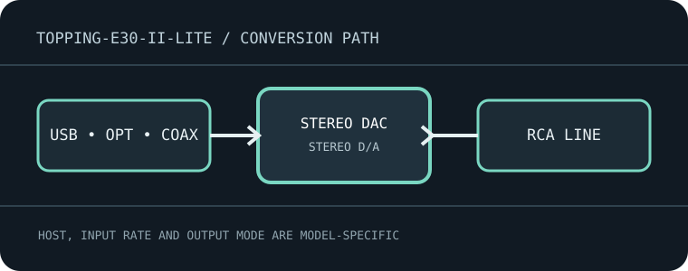

[ INDIVIDUAL MODEL // SOUND HARDWARE ]
TOPPING E30 II Lite
Compact desktop stereo DAC with USB, coaxial and optical S/PDIF inputs and stereo RCA output.

Model-specific specifications
| Exact model / architecture | Stereo DAC/preamp with switchable output mode and digital filtering; no microphone/line ADC, balanced output or headphone amplifier. |
|---|---|
| Digital inputs / interface | USB-B computer audio, one coaxial S/PDIF input and one Toslink optical S/PDIF input. |
| Analog / digital outputs | One stereo unbalanced RCA analog output; no XLR or headphone socket. |
| Supported formats and rates | USB: PCM through 32-bit/768 kHz, native DSD through DSD512 and DoP through DSD256 per TOPPING documentation. Optical/coaxial: PCM through 24-bit/192 kHz; rates depend on source S/PDIF output. DSD is not assumed on those S/PDIF paths. |
| Power | 5 V DC external supply; use a regulated supply with the stated connector/polarity. USB data is not the sole power connection. |
| Drivers / host compatibility | USB audio on computer hosts; TOPPING Windows driver may be required for high-rate PCM/native DSD and ASIO. macOS/Linux support depends on the selected USB Audio Class mode; confirm the exact manual and player settings. |
| Compatibility caveats | The RCA outputs can be configured for DAC/fixed or preamp/variable operation. Verify mode and level before connection; optical/coaxial cannot match USB’s maximum PCM rate. |
Compatibility & preservation
The RCA outputs can be configured for DAC/fixed or preamp/variable operation. Verify mode and level before connection; optical/coaxial cannot match USB’s maximum PCM rate.
- Record the exact product name, hardware revision, serial range, included power supply, firmware and driver version before service.
- Match digital sample format/rate to the selected physical input and host mode; set downstream amplifier level safely before playback.
- Keep the model-specific manufacturer manual with the device; connector shape alone does not guarantee electrical or protocol compatibility.
Manufacturer sources
- E30 II Lite manufacturer product pageManufacturer product documentation for the exact model and its revision-specific operation/specifications.
- Official E30 II Lite user manualManufacturer product documentation for the exact model and its revision-specific operation/specifications.